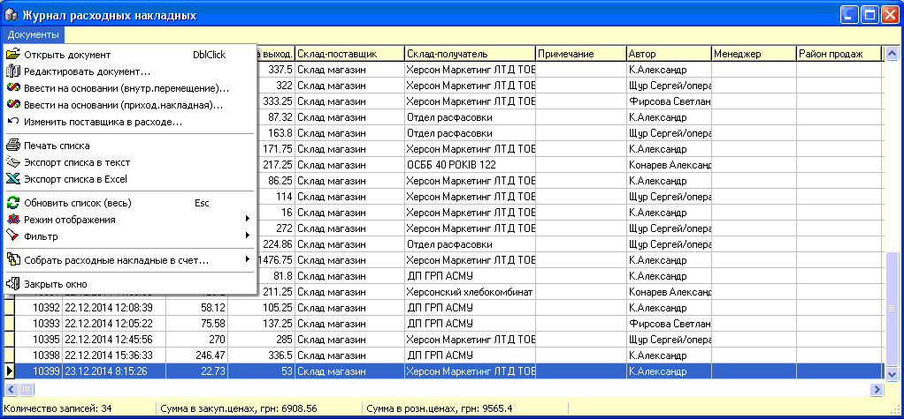
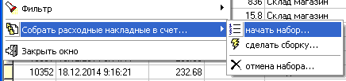
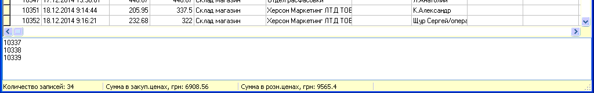

- Данный журнал позволяет работать с сохраненными
ранее расходными накладными.
- Расходные накладные по
которым печатались налоговые накладные маркируются синим цветом (при установке
соответствующих опций в настройках по ведению налоговых накладных). Накладные
связанные с Актами производства и переработки отмечаются цветом фуксия
(сиреневый).
- Так же как и в приходных
накладных при редактировании документа изменения табличной части
сохраняются немедленно, а заголовка по факту выхода из
накладной.
- На
основании расходной накладной можно создавать приходную накладную, что
очень удобно в некоторых случаях.
- Поскольку внутренние
перемещения, списания, расходные накладные и возвраты поставщику являются
внутренними документами, то посредством пункта меню "Режим
отображения" можно переходить из одного журнала в
другой.
- Для расходных
накладных есть уникальная возможность, в отличии от других внутренних
документов - на основании нескольких расходных накладных можно создать новый
счет, что экономит очень много времени, особенно при работе с
гос.организациями.
- Для этого в меню (см.рисунок ниже) выберите
"начать набор".
- 
- Внизу окна журнала
появится окно для ввода номеров объединяемых накладных, для добавления их
просто нажимайте пробел на этих накладных.
- 
- После того, как вы
выбрали все накладные, выберите пункт меню "сделать сборку" и откроется форма
счета с уже заполненной табличной частью.
- Для того чтобы закрыть окно с номерами, нажмите
"отмена набора".
- Фильтр журнала позволяет
отобрать документы с задаными параметрами:

- Значения критериев
отбора ясны из их названий.